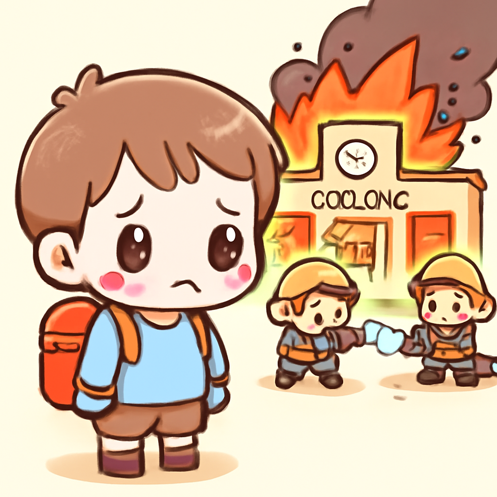

其一 · 也門摩卡 · 胡塞武裝攻佔紅海港口
也門胡塞武裝控制重要紅海港口摩卡
在也門摩卡，胡塞武裝於近日奪取了這個戰略性港口，這使他們更接近控制巴布曼德布海峽，這對全球貿易至關重要。這一事件不僅影響當地局勢，也可能對國際航運造成影響，讓人不禁想問：船隻是不是也該考慮避開這片水域？
🔗 原始新聞 ↗
2026-09-11 · 以古觀今，以笑抗愁
也門胡塞武裝控制重要紅海港口摩卡
在也門摩卡，胡塞武裝於近日奪取了這個戰略性港口，這使他們更接近控制巴布曼德布海峽，這對全球貿易至關重要。這一事件不僅影響當地局勢，也可能對國際航運造成影響，讓人不禁想問：船隻是不是也該考慮避開這片水域？
🔗 原始新聞 ↗
特朗普的選舉承諾引發經濟爭議
在英國倫敦，特朗普提出了一個引人注目的計劃，打算在選舉年向每位美國成人發放5000美元。不過，專家們對這個計劃的可行性、合法性及是否負擔得起表示質疑。這個提議引起了國內外的熱議，讓人不禁想：如果真的能發5000美元，大家會先買什麼呢？
🔗 原始新聞 ↗
中國一艘貨船火災，造成多名遇難者
在中國東部，一艘貨船發生火災，造成至少25人喪生，42名乘客中只有17人成功撤離。這起事件再次凸顯了海上航運的危險，尤其是在這樣繁忙的水域。希望未來能加強安全措施，讓人出行時不用再提心吊膽。
🔗 原始新聞 ↗
德國極右派政黨支持度上升，影響政局
在德國柏林，極右派政黨‘德國選擇’的支持度上升，這可能是該黨首次在德國某州執政。該黨的立場與克里姆林宮相似，這引發了對德國未來政治的擔憂。這情況讓人擔心，德國會不會開始學習俄國的處理方式？
🔗 原始新聞 ↗
剛果學校火災，造成多名兒童悲劇

在剛果民主共和國的布卡武，一場火災吞噬了兩所學校，造成超過20名兒童遇難。官方報導指出，逃生過程中發生踩踏事件，這讓人心痛不已。這場悲劇提醒我們，學校安全的必要性，未來希望能有更好的防災措施，讓孩子們能在安全的環境中學習。
🔗 原始新聞 ↗